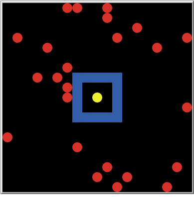

Open the BusinessInvestor model in NetLogo
Click setup
Turn all the turtles red
Turn turtle 5 green
Ask turtle 5 to identify all the patches that are exactly 2 patches away from the turtle’s patch (not a 2-patch radius from turtle-2)

neighbors primitive.member? primitive (member <agent> <agent-set>)patch-set primitive to turn an list of many patch-sets into a single patch-setask turtle 5 [
ask (patch-set [neighbors] of [neighbors] of self) with
[not member? self [(patch-set neighbors patch-here)] of myself]
[
set pcolor blue
]
]self refer to in patch-set [neighbors] of [neighbors] of self?
self refers to turtle 5
ask turtle 5 [ ... ] puts the [...] in the context of turtle 5, so self refers to turtle 5
self refer to in not member? self [(patch-set neighbors patch-here)] of myself?
self refers to the various patches in the patch-set: (patch-set [neighbors] of [neighbors] of self)
x with [...], where x is an agent-set evaluates [...] for each of the agents (patches, turtles, links) in x, so self in the [...] refers, in turn, to each patch in the patch-set
myself refer to in not member? self [(patch-set neighbors patch-here)] of myself?
myself refers to turtle 5
myself refers to the agent doing the askingto test-self-myself
ask turtle 5 [
ask turtle 7
[
print (word "first self = " self)
print (word "first myself = " myself)
ask turtle 2
[
print (word "second self = " self)
print (word "second myself = " myself)
]
]
]
]
endobserver> test-self-myself
first self = (turtle 7)
first myself = (turtle 5)
second self = (turtle 2)
second myself = (turtle 7)self refers to the agent being asked.myself refers to the agent doing the asking.turtle 5 is asking turtle 7 to do something.
self is turtle 7, myself is turtle 5
turtle 7 is asking turtle 2 to do something.
self is turtle 2, myself is turtle 7
Put a slider on the interface and call it number-of-links
Edit the chooser for vision-mode to add links as an option.
Edit to initialize-turtle:
to initialize-turtle
move-to one-of patches with [ not any? turtles-here ]
set wealth 0
set size 0.8
color-turtle 1.0
create-links-to n-of number-of-links other turtles
endEdit to-report find-best-patch:
ifelse vision-mode = "radius"
[
set candidates (patches in-radius sense-radius) with [ not any? turtles-here ]
set candidates (patch-set candidates patch-here)
]
[
ifelse vision-mode = "neighbors"
[
set candidates neighbors with [ not any? turtles-here ]
set candidates (patch-set candidates patch-here)
]
[
ifelse vision-mode = "links"
[
set candidates neighbors with [ not any? turtles-here ]
set candidates (patch-set candidates patch-here)
set candidates (patch-set candidates ([neighbors with [not any? turtles-here]] of out-link-neighbors) )
]
[
error "Unknown vision-mode"
]
]
]Function: \[U = (W + PT) \times (1 - F)^T\]
W = wealth, P = profit, F = risk of failure, T = time horizon
How does this change as investors gain more wealth?
Interactive app https://ees4760.jgilligan.org/contour